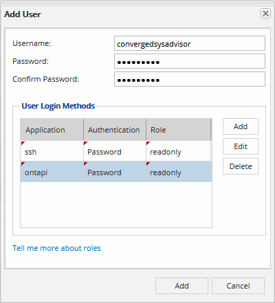
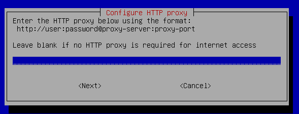
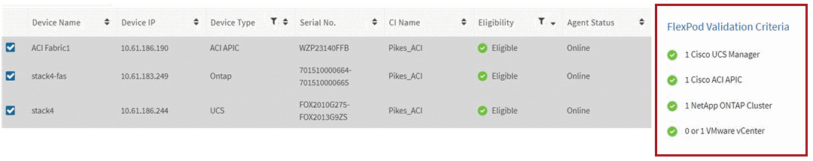

Get started with Converged Systems Advisor
Contributors
 Download PDF of this page
Download PDF of this page
To get started with Converged Systems Advisor, you must prepare your environment, install and set up the agent, and add a converged infrastructure to the portal.
You might want to learn how Converged Systems Advisor works before you get started.
Prepare your environment
Preparing your environment includes verifying support for your configuration, creating accounts for the agent, and registering for a NetApp Support Site account.
-
Verify support in the NetApp Interoperability Matrix Tool:
-
Verify that Converged Systems Advisor supports your FlexPod converged infrastructure.
-
Verify that you have a supported VMware ESXi server for the Converged Systems Advisor agent.
To minimize bandwidth usage, NetApp recommends installing the agent in the same data center as the FlexPod converged infrastructure.
-
-
Ensure that the network in which you install the agent allows connectivity between components:
-
The agent must have connectivity to each FlexPod component so it can collect configuration data.
-
The agent also requires an outbound internet connection to communicate with the following endpoints:
-
csa.netapp.com
-
docker.com
-
docker.io
-
-
-
Create accounts on each FlexPod component.
The agent requires credentials to collect configuration data. You must provide the credentials when you configure the agent.
-
Go to the NetApp Support Site and register for an account, if you do not have one.
A NetApp Support Site account is required to configure the agent and to access the portal.
Creating accounts on FlexPod devices
You must set up a read-only account in Cisco UCS Manager and on your Cisco Nexus switches. An admin account is required for ONTAP systems and VMware. You can set up a read-only access account for other users on your APIC. The agent uses these accounts to collect configuration data from each device.
Create a read-only account for Cisco UCS Manager
-
Log in to Cisco UCS Manager.
-
Create a locally authenticated user named csa-readonly.
All new users are read-only by default.
Create a read-only account for your Nexus switches
-
Log in to each Nexus switch using SSH or telnet.
-
Enter global configuration mode:
configure terminal
-
Create a new user:
username [name] password [password] role [role]
-
Save the configuration:
copy running configuration startup configuration
-
If you are using a TACACS+ server and you need to grant CSA user privileges, go to Granting CSA user privileges using a TACACS+ server.
Create an admin account for ONTAP
-
Log in to OnCommand System Manager and click the settings icon:
 .
. -
On the Users page, click Add.
-
Enter a user name and password and add ssh, ontapi and console as user login methods with admin access.

Create a read-only account for VMware
-
Log in to vCenter.
-
In the vCenter menu, choose Administration.
-
Under roles, choose Read-only.
-
Click the icon for Clone role action and change the name to CSA.
-
Select the newly created CSA role.
-
Click the Edit role icon.
-
Under Edit role, choose Global and then check Licenses.
-
On the sidebar, select Single sign on→Users and groups→Create a new user.
-
Name the new user CSARO under DOMAIN vpshere.local.
-
On the sidebar, select Global Permissions under Access Control.
-
Choose the user CSARO and assign ROLE CSA.
-
Log in to the Web Client.
Use user ID: CSARO@vsphere.local and previously created password.
Create a read-only account on the APIC
-
Click Admin.
-
Click Create new local users.
-
Under User Identity, enter the user information.
-
Under Security select all security domain options.
-
Click + to add user certificates and SSH keys if needed.
-
Click Next.
-
Click + to add roles for your domain.
-
Select the Role Name from the dropdown menu.
-
Select Read for the Role Privilege Type.
-
Click Finish.
Deploying the agent
You must deploy the Converged Systems Advisor agent on a VMware ESXi server. The agent collects configuration data about each device in your FlexPod converged infrastructure and sends that data to the Converged Systems Advisor portal.
Downloading and installing the agent
You must deploy the Converged Systems Advisor agent on a VMware ESXi server.
To minimize bandwidth usage, you should install the agent on a VMware ESXi server that is in the same data center as the FlexPod configuration. The agent must have connectivity to each FlexPod component and to the internet so it can send configuration data to the Converged Systems Advisor portal using HTTPS port 443.
The agent is deployed as a VMware vSphere virtual machine from an Open Virtualization Format (OVF) template. The template is Debian-based with 1 vCPU and 2 GB of RAM (more may be needed for multiple or larger FlexPod systems).
-
Download the agent:
-
Log in to the Converged Systems Advisor portal.
-
Click Download Agent.
-
-
Install the agent by deploying the OVF template on the VMware ESXi server.
On some versions of VMware, you might receive a warning when deploying the OVF template. The virtual machine was developed on the latest version of VCenter with hardware compatibility for older versions, which might result in the warning. You should review the configuration options prior to acknowledging the warning and then proceed with installation.
Setting up networking for the agent
You must ensure that networking is set up correctly on the agent virtual machine to enable communication between the agent and FlexPod devices and between the agent and several internet endpoints. Note that the networking stack is disabled on the virtual machine until the system initializes.
-
Ensure that an outbound internet connection enables access to the following endpoints:
-
csa.netapp.com
-
docker.com
-
docker.io
-
-
Log in to the agent’s virtual machine console using the VMware vSphere client.
The default user name is
csaand the default password isnetapp.For security purposes, SSHD is disabled by default. -
When prompted, change the default password and make note of the password, because it cannot be recovered.
After you change the password, the system reboots and starts the agent software.
-
If DHCP is not available in the subnet, configure a static IP address and DNS settings using standard Debian tools, and then reboot the agent.
The network configuration for the Debian virtual machine defaults to DHCP. NetworkManager is installed and provides a text user interface that you can start from the command nmtui (see the man page for more details).
For additional help with networking, see the network configuration page on the Debian wiki.
-
If your security policies dictate that the agent must be on one network to communicate with FlexPod devices and another network to communicate with the internet, add a second network interface in VCenter and configure the correct VLANs and IP addresses.
-
If a proxy server is required for internet access, run the following command:
sudo csa_set_proxyThe command generates two prompts and shows the required format for the proxy entry. The first prompt enables you to specify an HTTP proxy, while the second enables you to specify an HTTPS proxy.
Here’s the prompt for the HTTP proxy:

-
Once the network is up, wait approximately 5 minutes for the system to update and start.
A broadcast message appears on the console when the agent is operational.
-
Verify connectivity by running the following CLI command from the agent:
curl -k https://www.netapp.com/us/index.aspx
If the command fails, verify DNS settings. The agent virtual machine must have a valid DNS configuration and the ability to reach csa.netapp.com.
Installing an SSL certificate on the agent
The agent creates a self-signed certificate when the virtual machine boots for the first time. If required, you can delete that certificate and use your own SSL certificate.
Converged Systems Advisor supports the following:
-
Any cipher compatible with OpenSSL version 1.0.1 or greater
-
TLS 1.1 and TLS 1.2
-
Log in to the agent’s virtual machine console.
-
Navigate to
/opt/csa/certs -
Delete the self-signed certificate that the agent created.
-
Paste your SSL certificate.
-
Restart the virtual machine.
Configuring the agent to discover your FlexPod infrastructure
You must configure the agent to collect configuration data from each device in your FlexPod converged infrastructure.
-
Open a web browser and enter the IP address of the agent virtual machine.
-
Log in to the agent by entering the user name and password of your NetApp Support Site account.
-
Add the FlexPod devices that you want the agent to discover.
You have two options:
-
Click Add a device to enter details about your FlexPod devices, one by one.
-
Click Import devices to fill out and upload a CSV template that includes details about all devices.
Note the following:
-
The user name and password should be for the account that you previously created for the device.
-
If your UCS environment has LDAP user management configured, then you must add the user’s domain before the user name. For example: local\csa-readonly
-
-
Each device in the FlexPod infrastructure should display in the table with a checkmark.

Adding an infrastructure to the portal
After you configure the agent, it sends information about each FlexPod device to the Converged Systems Advisor portal. You must now select each of those components in the portal to create an entire infrastructure that you can monitor.
-
In the Converged Systems Advisor portal, click Add Infrastructure.
-
Complete the steps to add the infrastructure:
-
Enter basic details about the infrastructure.
If you are adding a Cisco ACI Infrastructure, enter yes when asked if your FlexPod uses Cisco UCS Manager; and enter Nexus switch in ACI mode when asked the type of Network Configuration your FlexPod contains.
-
Select each device that is part of the FlexPod configuration.
When you select a device, the Eligibility column displays either Eligible or Not Eligible. A device is not eligible if it was discovered by a different agent. Once you have selected all of the required components, you should see a green checkmark next to each device type.

-
Add your Converged Systems Advisor serial number to unlock key functionality.
-
Review the summary, accept the terms of the license agreement, and click Add Infrastructure.
-
Converged Systems Advisor adds the infrastructure to the portal and starts collecting configuration data about each device. Wait a few minutes for the agent to collect information from the devices.
Sharing an infrastructure with other users
Sharing a converged infrastructure enables another person to log in to the Converged Systems Advisor portal so they can view and monitor the configuration. The person who you share the infrastructure with must have a NetApp Support Site account.
-
In the Converged Systems Advisor portal, click the Settings icon, and then click Users.

-
Select the configuration from the User table.
-
Click the
 icon.
icon. -
Enter one or more email addresses next to the user role that you want to provide.
You can enter multiple email addresses in a single field by pressing Enter after the first email address. -
Click Send.
The user should receive an email that contains instructions for accessing Converged Systems Advisor.
Granting CSA user privileges using a TACACS+ server
If you are using a TACACS+ server and you need to grant CSA user privileges for your switches, you must create a user privilege group and grant the group access to the specific set up commands needed by CSA.
The following commands should be written into the configuration file for your TACACS+ server.
-
Enter the following to create a user privilege group with read-only access:
group=group_name {
default service=deny
service=exec{
priv-lvl=0
}
} -
Enter the following to grant access to commands needed by CSA:
cmd=show {
permit "environment"
permit "version"
permit "feature"
permit "feature-set"
permit hardware.*
permit "interface"
permit "interface"
permit "interface transceiver"
permit "inventory"
permit "license"
permit "module"
permit "port-channel database"
permit "ntp peers"
permit "license usage"
permit "port-channel summary"
permit "running-config"
permit "startup-config"
permit "running-config diff"
permit "switchname"
permit "int mgmt0"
permit "cdp neighbors detail"
permit "vlan"
permit "vpc"
permit "vpc peer-keepalive"
permit "mac address-table"
permit "lacp port-channel"
permit "policy-map"
permit "policy-map system type qos"
permit "policy-map system type queuing"
permit "policy-map system type network-qos"
permit "zoneset active"
permit "san-port-channel summary"
permit "flogi database"
permit "fcns database detail"
permit "fcns database detail"
permit "zoneset active"
permit "vsan"
permit "vsan usage"
permit "vsan membership"
} -
Enter the following to add your CSA user account to the newly created group:
user=user_account{
member=group_name
login=file/etc/passwd
}
Configuring notifications
If you have a Premium license, Converged Systems Advisor can alert you about changes to your FlexPod infrastructure through email notifications.
-
In the Converged Systems Advisor portal, click the Settings icon, and then click Alert Settings.
-
Check the notification that you would like to receive for each converged infrastructure that has a Premium license.
Each notification includes the following information:
Collection Failures Alerts you when Converged Systems Advisor cannot collect data from a converged infrastructure.
Offline Agent Alerts you when a Converged Systems Advisor agent is not online.
Daily Alert Digest Alerts you about failed rules that occurred on the previous day.
-
Click Save.
Converged Systems Advisor will now send email notifications to the users associated with the converged infrastructure.
 Edit on GitHub
Edit on GitHub